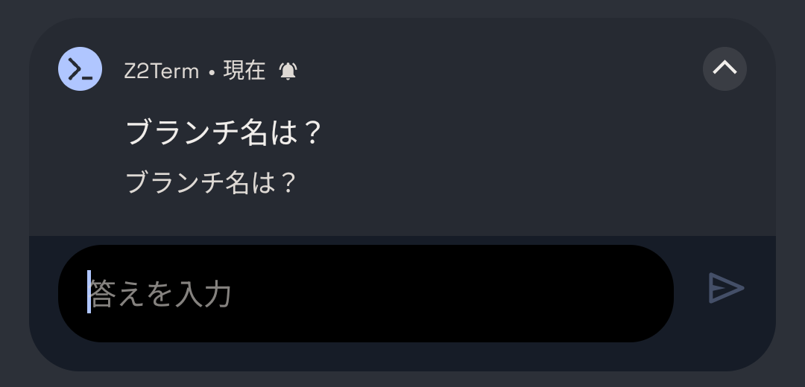

使いこなしガイド / 2. マクロ
ここからが Z2Term の独自部分です。シェルから Android 本体に手を伸ばす
z2-* コマンドと、それをまとめた「マクロ」の話をします。
Z2Term でいうマクロは、~/.z2term/macros/ に置いたふつうのシェルスクリプトです。
特別な書き方はありません。特別なのは置き場所で、ここに置くと次の 3 つが使えるようになります。
PATH に入っています）。remind.sh 30m 薬 のように。z2-when → 3 章）。まずは同梱のサンプルを入れてみるのが早道です。
z2-macro list # どんなサンプルがあるか見る z2-macro install all # 全部 ~/.z2term/macros/ に置く z2-macro show remind # 中身を読む（そのまま書き換えて構いません）
z2-when で回す /
ウィジェットに割り当てる）も一緒に表示されます。既にあるファイルは上書きしません。z2-* コマンド権限の設定は要りません（一部、OS 側の許可が要るものだけ後述）。よく使うものを挙げます。
| コマンド | できること |
|---|---|
z2-notify | 通知を出す。-h でバナー、-b ラベル で返事のボタン |
z2-ask | 通知の返信欄で質問して、答えを受け取る（下記） |
z2-toast / z2-say | 画面下の短いメッセージ / 読み上げ |
z2-clip | クリップボードの読み書き |
z2-state | 今の端末の状態（画面・ロック・充電・電池・Wi-Fi・SSID・マナーモード・音量…） |
z2-battery / z2-sensor | 電池 / 照度・加速度・近接 |
z2-torch / z2-vibrate / z2-volume / z2-media | ライト / バイブ / 音量 / 再生キー |
z2-open / z2-share / z2-intent | URL やファイルを開く / 共有シートへ / 任意の Intent |
z2-noti | いま出ている通知を読む（要「通知アクセス」） |
z2-screen keepon | 時間を決めて画面を消させない（アプリを畳んでも効きます） |
z2-alarm | 時刻の予約（Doze 中でも起きます） |
z2-session | このアプリのタブを操る（新規タブ・文字を入れる・画面を取り出す） |
z2-tile / z2-icon | クイック設定タイルへの割り当て / アイコンの差し替え（→ 4 章） |
z2-when | 自動化ハブ（→ 3 章） |
z2adb / z2doctor | PC 不要の adb / 環境の健康診断 |
--help を付けると詳しい説明が出ます（例: z2-tile --help）。全体の一覧は z2help です。z2-ask は、通知の返信欄で質問して、打ち込まれた答えを標準出力に返します。
アプリを開かなくても、通知を下ろして答えるだけで、裏で待っているスクリプトが続きを始めます。

# 答えなければ非ゼロで終わるので「やめる」がそのまま書ける name=$(z2-ask "ブランチ名は？") || exit 1 git switch -c "$name"
選択肢から選ばせたいときは z2-notify -b です。押されたボタンは
~/.z2term/events.jsonl に 1 行増えるので、それを見て続きを分岐させます。
z2-notify -h -n cleanup -b はい -b あとで "掃除しますか?" "一時ファイルを消します"
ふつうの POSIX シェルスクリプトです。1 行目にシェバン、2 行目に「何をするものか」を コメントで書いておくと、ウィジェットやタイルの一覧にその説明が出ます。
#!/bin/sh # ~/.z2term/macros/lowbat.sh ─ 電池が減ったら知らせる level=$(z2-state level) [ "$level" -lt 20 ] || exit 0 z2-notify -h "電池 ${level}%" "そろそろ充電してください" z2-say "電池が少なくなりました"
置いたら実行できるようにします。
chmod +x ~/.z2term/macros/lowbat.sh
lowbat.sh # 名前だけで呼べます
at / atd / systemd は使えません。
この環境には PID 1 が無く、atd も入っていません。
「指定の時刻に 1 回」を at で書くと何も起きず、エラーも出ません。
cron は動きますが省電力（Doze）で止まります。
時刻で動かすものは z2-when time: か z2-alarm だけを使ってください。& や nohup で逃がした子プロセスは止まりません。
時間のかかるダウンロードなどは、前景で待たずに背景へ投げてください。remind.sh に任せられます。
sh ~/.z2term/macros/remind.sh 明日 09:00 "打ち合わせ"マクロガイド には、そのファイル 1 本を AI に渡せば動くマクロが出てくるように、 仕様とコピペ用の指示文がまとまっています。「§7. AI にマクロを作ってもらう」をご覧ください。